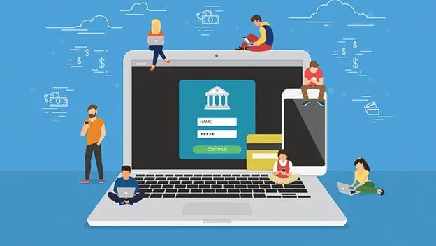
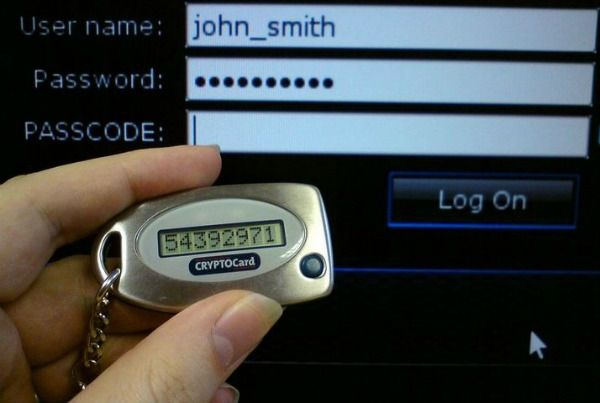
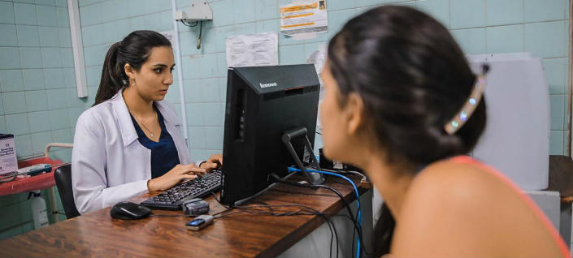
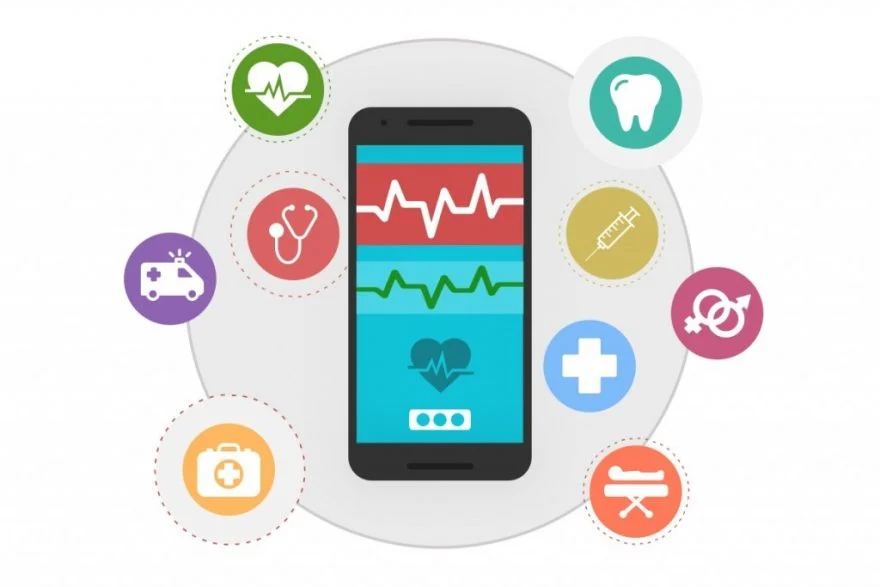
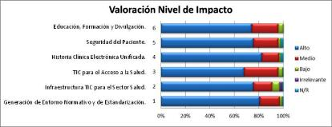

La banca online, tambien conocida como banca electronica, es una nueva modalidad
de banca que completa y renueva su tradicional concepto al realizarse de manera
electronica mediante acceso a Internet.Supone la posibilidad de realizar multiples
operaciones bancarias sin necesidad de una sucursal fisica para ello.
La banca online permite realizar diversas acciones, como la contratación de productos bancarios,
la consulta personal e individual de dudas sobre los servicios de las entidades,o el abono y transferencia de fondos.

ＴＩＰＯＳ ㅤＤΣ ㅤ ＢΛＮＣΛ ㅤＯＮＬＩＮΣ
⛤Servicio de banca online de un banco tradicional: los bancos tradicionales se han adaptado a los nuevos tiempos y a la era de la tecnología y,
en la actualidad, es posible acceder a toda la información bancaria mediante los canales digitales de la entidad. Además,
las cuentas online de este tipo de entidades suelen estar exentas de comisiones,
a diferencia del resto de sus cuentas. BBVA sería el mejor ejemplo dentro de este grupo.
⛤Bancos 100% online o móvil: son bancos cuya estructura es puramente digital y que solo se pueden gestionar mediante los canales digitales de la entidad,
es decir, no es posible acudir a ninguna oficina (y, en caso de serlo, lo más probable es que ello conlleve una comisión). Sus cuentas acostumbran a estar
exentas de comisiones y repletas de ventajas.
Un claro ejemplo lo podríamos hallar en Openbank, el banco online de Santander.
⛤Bancos híbridos: son bancos cuya operativa y gestión se acostumbra a desarrollar de forma online pero que,
a su vez, disponen de una red de oficinas (normalmente no muy extensa) e incluso cajeros propios. Este tipo de bancos acostumbra a ofrecer
cuentas gratuitas y permiten
combinar la operativa digital y presencial según nuestra situación.
ING sería el banco más representativo de este tipo de entidades.
ＱＵΣㅤ ΣＳㅤΞＬ ＰＨＩＳＨＩＮＧ
phishing se refiere al envío de correos electrónicos que tienen la apariencia de proceder de fuentes de confianza (como bancos, compañías de energía etc.)
pero que en realidad pretenden manipular al receptor para robar información confidencial.
Por eso siempre es recomendable acceder a las páginas web escribiendo la dirección directamente en el navegador.
ＶΣＮＴΛＪΛＳ Ｙ ＤΞＳＶΞＮＴΛＪΛＳ
VENTAJA
Trámites online.El cliente se ahorra pasar por la oficina y por lo tanto las operaciones pueden hacerse a través de un ordenador, de manera rápida y sencilla.
DESVENTAJA
Desconfianza. Mucha gente no se siente cómoda a la hora de dejar sus ahorros y su información personal en un banco al que no puede acudir físicamente.
ＴＯＫΞＮㅤＤΣㅤＳΣＧＵＲＩＤΛＤ
El token de seguridad, también conocido como token de autenticación o token criptográfico,
es un dispositivo portátil de alta tecnología que genera una clave de 6 dígitos de forma aleatoria e irreemplazable,
dicha clave se actualiza generalmente cada 60 segundos aproximadamente.
Es decir que al adquirir un token de seguridad las posibilidades de fraudes disminuye significativamente,
pues además de tener una clave que lo identifica como titular de cierto servicio financiero, tendrá una clave adicional por transacción.

QUE ES E-SALUD
Es el término con el que se define al conjunto de Tecnologías de la Información y
la Comunicación (TICs) que, a modo de herramientas,se emplean en el entorno sanitario en materia de prevención, diagnóstico, tratamiento, seguimiento, así como en la gestión de la salud,
ahorrando costes al sistema sanitario y mejorando la eficacia de este.Engloba diferentes productos y servicios para la salud, como aplicaciones móviles,
la telemedicina, los dispositivos wearables (para la monitorización que se integran en ropa y accesorios), el Big Data (grandes cantidades de datos), los sistemas de apoyo a la decisión clínica,
el Internet de las cosas o los videojuegos de salud, entre otros.
En opinión del doctor Sergio Vañó, presidente de la Asociación de Investigadores en eSalud (AIES),
la eSalud supone una “transformación radical de la sanidad y, por ello, es necesario una evaluación de la eficacia y la seguridad de los sistemas de eSalud”,
con el objetivo de que los profesionales sanitarios “estén preparados y, los datos proporcionados por los dispositivos de monitorización,
puedan integrarse en la asistencia sanitaria”.
ＨＩＳＴＯＲＩΛＳ ＣＬＩＮＩＣΛＳ ΞＬΣＣＴＲＯＮＩＣΛＳ
Es el proceso que permite que la información viaje a través de un sistema entre varias
instituciones para que el personal médico pueda ver en red todos
los antecedentes de salud de un paciente.La interoperabilidad de la historia clínica sirve para que los médicos puedan consultar información de los pacientes
desde cualquier lugar del país sin importar el sitio de atención del paciente, permitiendo a los profesionales de la salud tener datos claros reales
y confiables de todos los antecedentes de salud de las personas,
esto con el fin de lograr mejores diagnósticos y una atención más segura.

ΛＰＰＳ ＭＯＶＩＬΞＳ ＤΣ Ξ－ＳΛＬＵＤ
Algunas de estas aplicaciones son:
Headspace.Nike+Run Club. Universal Doctor Speaker. IDoctus. Cycles. Runtastic. Social Diabetes. Fabolous.

ＨＯＳＰＩＴΛＬΣＳ ＤＯＮＤΣ ＳΞ ΞＮＣＵΞＮＴＲΞ Ξ－ＳΛＬＵＤ
Hospital del Sur I nivel-Hospital El Carmen- Hospital Engativá-Hospital Federman-Hospital Meissen-
Hospital Militar-Central de Bogotá-Hospital Rafael Uribe-Hospital San Blas-HospitalSan Cristóbal ESE
-Hospital San Juan de Dios de Bogotá-Hospital Simón Bolívar Hospital-Universitario de la Samaritana-Hospital Universitario Nacional de Colombia-Hospital Universitario Santa Clara-
Hospital Las Américas-Hospital Vista Hermosa-Instituto Materno Infantil.

ＶΣＮＴΛＪΛＳ Ｙ ＤΞＳＶΞＮＴΛＪΛＳ
VENTAJA
Almacenamiento y acceso completo a la información, capacidad de intercambio y envío de informes a pacientes u otros profesionales.
Esto le permite al médico realizar un seguimiento del paciente más completo y tomar decisiones clínicas más fácilmente.
DESVENTAJA
Cada avance tecnológico puede resultar a veces muy caro y no siempre se realiza un desembolso, tanto por parte de las administraciones públicas como por los pacientes.